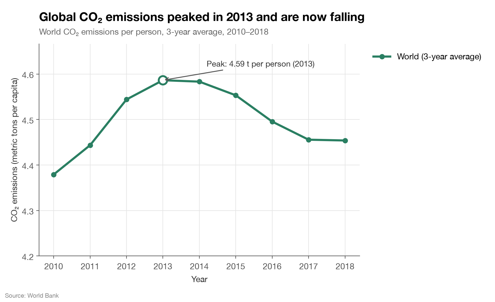
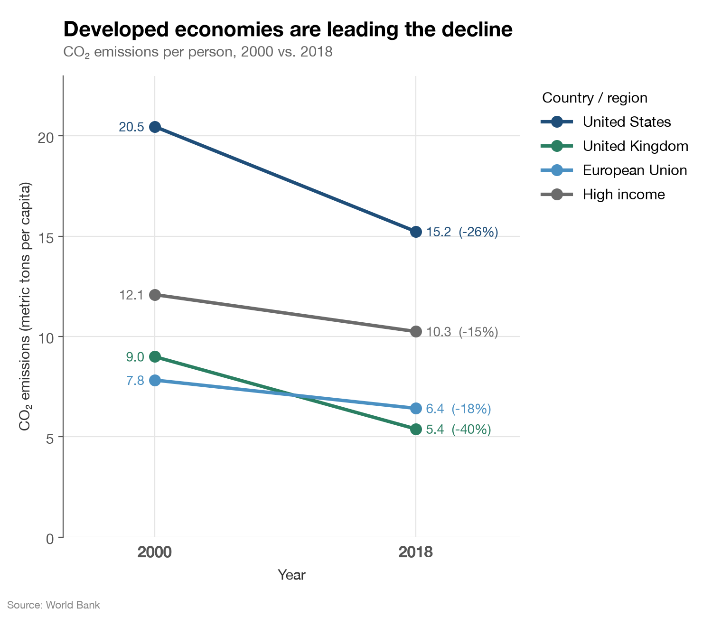
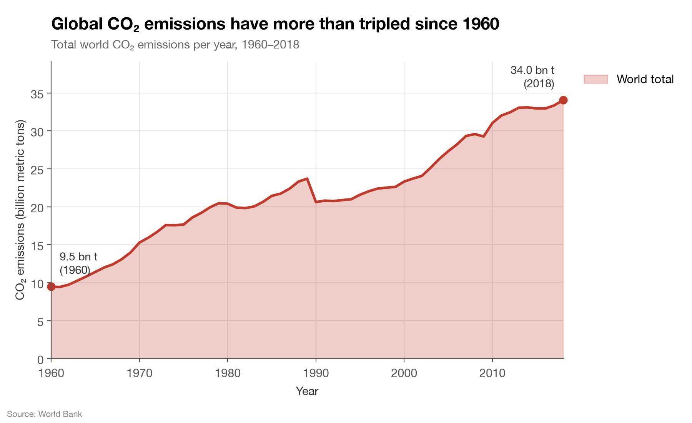
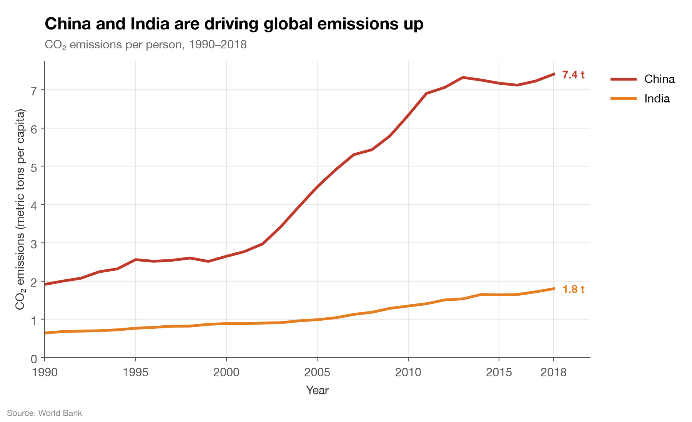

Project 2 Report
Persuasive or Deceptive Visualization?
Snigdha Tiwari — sntiwari@ucsd.edu
Proposition: Global CO₂ emissions are going down.
Data: World Bank Human Development Indicators, 1960–2020 (climate change indicators). I used two columns, CO₂ emissions (metric tons per capita) and CO₂ emissions (kt). CO₂ values in this file stop at 2018, so every chart ends there.
FOR the Proposition


Design Decisions and Rationale
- −1.5 Per-person emissions instead of totals. Both charts use CO₂ per person instead of total CO₂. I did this because total emissions never really went down. They went from 33.1 billion tons in 2013 to 34.0 billion in 2018. The world population grew by about 420 million in those years, so the per-person number dropped a little even though total emissions kept going up. Per capita is a known metric, so it doesn't look suspicious, but it doesn't actually answer whether emissions are going down. I thought about using totals with a short time window instead, but totals go up in almost every window, so per capita was the only way to make this side work.
- −2 Short time window and truncated y-axis. The first chart starts in 2010 and the y-axis starts at 4.2 instead of 0. Together, these make a ~3% dip (4.59 → 4.45 t) look like a big drop. Starting in 2010 also hides the long upward trend since 1960. I kept the gridlines and tick labels so it looks like a normal line chart and the axis doesn't look edited. Someone who reads the y-axis closely would see that it starts at 4.2, but most people only look at how steep the line is, which is what makes this so deceptive.
- −2 3-year average, headline, and peak annotation. The chart shows a 3-year average instead of the raw yearly values. In the raw data, per-person emissions went back up in 2017 and 2018, and the 2018 value (4.48 t) is basically the same as 2010 (4.48 t). Averaging each year with the two before it smooths that out, so the line goes down every year after 2013. A lot of charts use averages to smooth out data that goes up and down, and the subtitle says "3-year average," so it doesn't look suspicious. Additionally, the title tells the reader the conclusion ("peaked in 2013 and are now falling") before they even look at the data, and the circle and arrow on the 2013 peak draw the eye to the high point, so everything after it reads as going down. At first I showed the raw values, but the title said "now falling" while the line was going up at the end, which was too easy to notice. A more neutral version would show the raw values with a title like "World CO₂ per person, 2010–2018" so readers could see the rebound themselves.
- −2 Cherry-picked countries with a "leading the decline" title. The slope chart only shows the US, UK, EU, and High income, all of which went down. The title "Developed economies are leading the decline" is true for every line shown, but it makes it sound like the rest of the world is following, which isn't the case. It leaves out China, which is the largest emitter (about 30% of the world total in 2018), and China's per-person emissions almost quadrupled since 1990. At first I titled it "The world's biggest economies are cutting emissions," but leaving China out of a chart about the biggest economies was too easy to notice, so I changed it to a claim that only covers the countries shown. The groups also overlap. "High income" already includes the US, UK, and most of the EU, so it looks like four separate declines when it's mostly the same countries. I used a slope chart with only 2000 and 2018 because it hides the year-to-year ups and downs and makes every line slope down cleanly.
- +1 Zero baseline, exact labels, and a source note on the slope chart. On the slope chart, the y-axis starts at 0 and every point is labeled with its value and percent change. Both charts also list the World Bank as the source. These choices are not deceptive and the numbers are correct, but they still help persuade the reader. When a chart has exact numbers and a real source, people are more likely to trust it and less likely to question which countries I picked. Additionally, the green color in both charts makes it feel like good environmental news.
AGAINST the Proposition


Design Decisions and Rationale
- +1.5 Total emissions, the full time range, and a zero baseline. The main chart shows total world CO₂ for every year in the data (1960–2018), and the y-axis starts at 0. I converted kt to billions of metric tons so the numbers are easier to read. I labeled the 1960 and 2018 values so readers can check "more than tripled" themselves (9.5 → 34.0, about 3.6×). I think this is the most honest way to answer the proposition, because total emissions are what actually matter for the climate, not emissions per person. Starting at the earliest year does make the growth look as big as possible though, so I didn't give it a +2.
- −0.5 Red area fill. I filled the area under the line and made it red. The fill makes the chart feel heavier and the red makes it feel alarming, even before someone reads it. It doesn't change the data, but it's an emotional choice and not a neutral one. I thought about using a plain gray line, which would be more neutral but less persuasive.
- −0.5 Leaving the 1990 drop unexplained. Total emissions drop by about 3 billion tons from 1989 to 1990. This isn't a real drop in emissions, but rather comes from how the dataset handles the Soviet Union. Before 1990, the "Russian Federation" row includes the whole USSR (3.9 billion tons in 1989), and in 1990 it goes down to just Russia (2.2 billion tons) when Ukraine, Kazakhstan, and the other countries start being listed separately. I didn't add a note about it. Explaining it would be less deceptive, but pointing out a "drop" would distract from the story that emissions are rising. Leaving it in also makes the chart look unedited.
- −1.5 Title claims more than the China/India chart shows. The title says China and India are "driving global emissions up," but the chart shows emissions per person, which doesn't show how much each country adds to the global total. China's totals do back up the claim (about 30% of world emissions in 2018), but the chart doesn't show that. Additionally, India's 1.8 t per person is a lot less than the US's 15.2 t. The steep red line makes the claim feel proven even though the metric doesn't match.
- −1.5 Only two countries, with no comparison group. I only showed the two fastest-growing big emitters with no high-income countries to compare, so it looks like they're the whole story. Starting in 1990 also turns China's 2013–2016 plateau into a small bump in a long rise. Adding the US or World line would give readers something to compare to, but it would also show that the US still emits about twice as much per person as China. The 2018 values are labeled and the y-axis starts at 0, so the numbers themselves are accurate.
Final Reflection
I started this project by exploring the climate indicators and looking for a trend that could be framed in two opposite ways. CO₂ emissions worked well because the dataset has both a per-person column and a total column, and they tell different stories after 2013. Once I found that, the rest of the work was choosing which metric, years, and countries to show. Both sides use the same dataset, and none of the charts contain incorrect numbers. What surprised me was how little I had to change to flip the conclusion. When I switched from totals to per capita, cut the window from 1960 to 2010, used a 3-year average, and moved the axis floor from 0 to 4.2, the record-high turned into a falling trend.
The hardest part for me was making the deceptive side subtle. Truncating an axis or missing a country is easy to see when someone looks for it, so I relied on things that make charts look trustworthy such as labeled values, a source line, consistent styling, and titles that sound like news headlines. Something I didn't expect was that the less deceptive choices, like the exact labels and the zero baseline on the slope chart, actually made the misleading parts more convincing. The "against" side was easier to make less deceptive because the data supports it, but I still used color and an area fill to push the reader emotionally.
I think a visualization is ethical when the chart actually answers the question in its title, and when someone who looked at the data would come to the same conclusion. Some persuasion is okay and using color, annotations, and a clear title to point the reader to something is fine, as long as it doesn't change what the data says. Where I draw the line is when a design choice only works if the reader doesn't notice something. Some examples from my project are using a metric that doesn't match the claim, starting the time window right before a peak, and saying developed economies are "leading the decline" when the biggest emitter is going the other way. Based on this, my "for" visualization is misleading even though all of the numbers in it are correct.